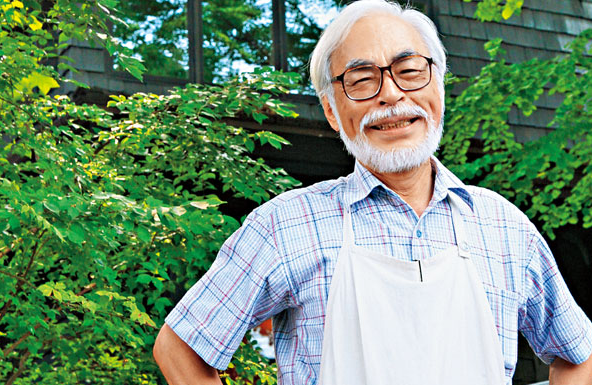
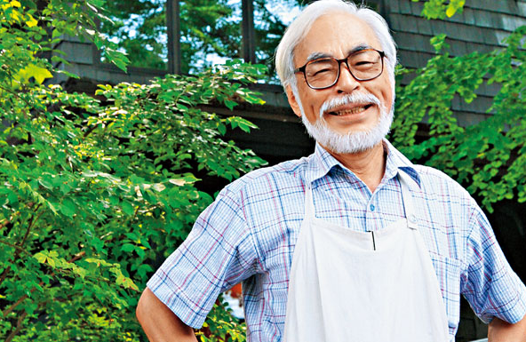
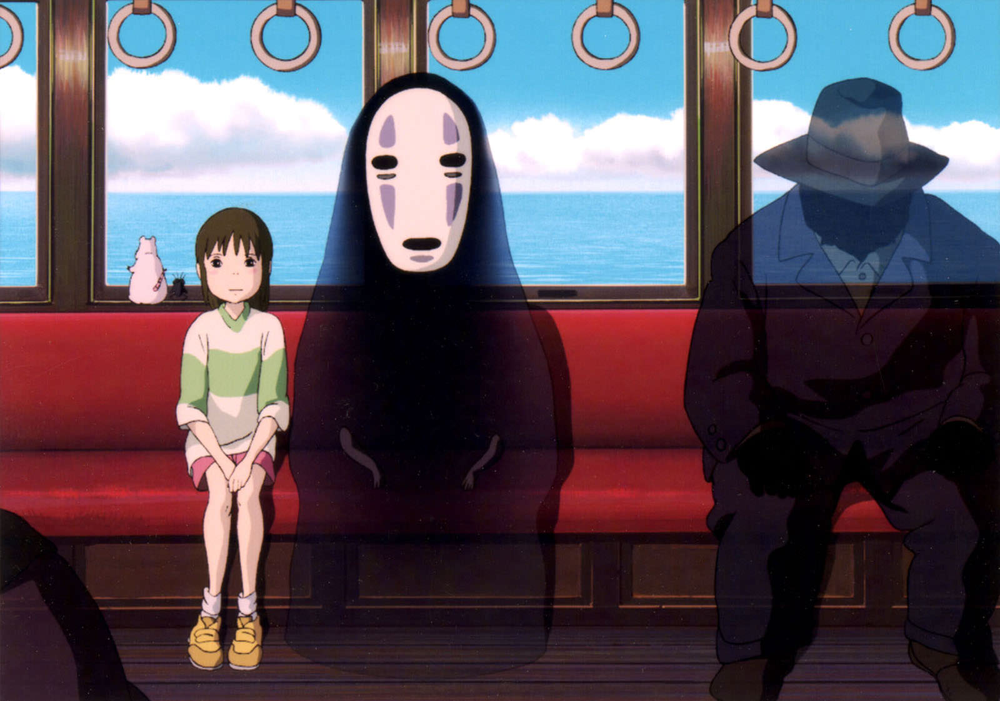
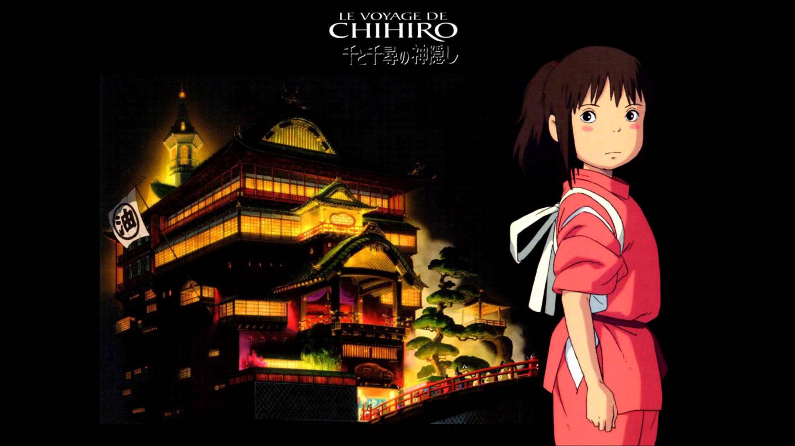
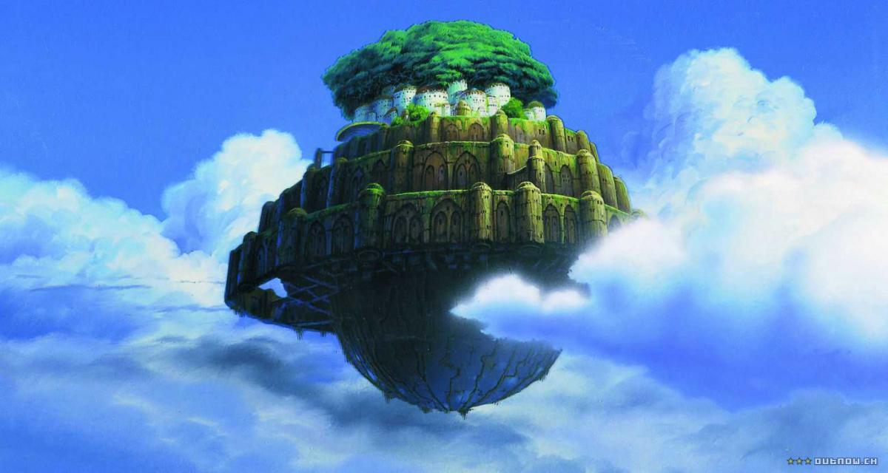

是日本動畫師、動畫導演、及漫畫家。畢業於杉並區立永福小學校、杉並區立大宮中學校、東京都立豐多摩高等學校及學習院大學政治經濟學院。大學畢業後踏入動畫製作工作，日後成為日本知名動畫廠吉卜力工作室的核心人物之一。其執導過11部長篇動畫電影，至2013年9月宣布退休。
個人風格-宮崎駿的動畫電影大多涉及人類與自然之間的關係、和平主義及女權運動。他的作品也經常出現飛行、兒童心理及青春期的思想。 劇情創作上，不常將腳本、結局一次寫好，多採用一邊製作、一邊決定劇情下一步內容的即興方式。 

是吉卜力工作室與德間書店於1988年推出的一部動畫電影，由宮崎駿所執導。電影描寫的是日本在經濟高度發展前存在的美麗自然，那個只有孩子才能看見的不可思議世界和豐富的想像，因為喚起觀眾的鄉愁而廣受大眾歡迎。
片中的場景為宮崎駿將小時生活周遭的神田川流域景象模樣、當時日本動畫公司所在點多摩市的聖蹟櫻丘附近的景色、以及所澤市一帶景點所融合出的場景。


內容講述一個小女孩誤闖了神祕世界，之後經歷成長的故事。
在戲劇開頭中千尋前往新家的路上參考了四方津車站一帶、和由日本橋往山梨縣的甲州街道，所描繪內容是將甲州街道原有一些沿著山陵的路途景色；將山陵上方部份去掉再補上住宅區所畫出的模樣。 千尋一家闖入的異世界小鎮；是以位在吉卜力附近西北方的小金井公園中江戶東京建築園作為主要場景造型來源，該園區有將昭和早年時期的舊式建築遷移至裡頭，是宮崎駿過去在製作《神隱少女》前；便已多次探訪的地方。 油屋的造型來源是參考江戶東京建築園內的子寶湯澡堂、以及19世紀末於愛媛縣松山市建造的澡堂道後溫泉本館。
 故事內容改編自英國奇幻文學作家黛安娜·韋恩·瓊斯在1986年的著作《魔幻城堡》（Howl's Moving Castle）。
*哈達帽子店（ハッター帽子屋） 英文原名HATTER，原著譯名海特，引用自名著愛麗絲夢遊仙境瘋帽商海特。電影設定初期為卡達，後來改為哈達。其為蘇菲父親所傳承下來的帽子店，後來被改販售鮮花，成為哈達花店。 *伽加利西點店（カフェ・チェザーリ） 位於蘇菲出生的城鎮，是一間大型咖啡店，有巧克力專賣部門，蘇菲妹妹蕾蒂在此工作。 *星之湖（星の湖） 荒地附近，移動城堡曾來到此處並晾曬衣服，蘇菲在此感到心靈的平靜。 霍爾兒時曾在此地住過一段時間，也是在此與卡西法訂下契約。

為在1985年成立的吉卜力工作室首次公開的劇院作品，和本作品同一天公開上映的另一部宮崎駿作品則是電視動畫《名偵探福爾摩斯》的劇場版「哈德遜夫人人質事件」與「多佛海峽的大空中戰！」
